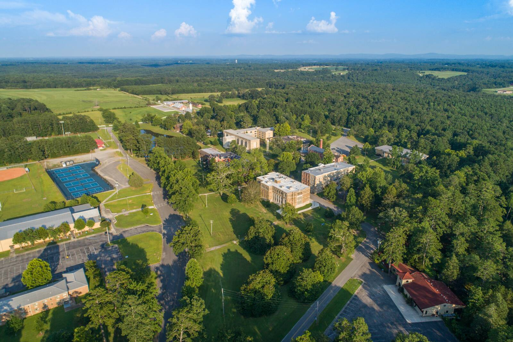

About this site
Saint Bernard Abbey from the air, Saint Bernard Abbey · © Saint Bernard Abbey
Who we are
We are the Benedictine monks of Saint Bernard Abbey in Cullman, Alabama. Monks have prayed here since 1891.Check: founding year 1891 (osb.org, July 2026, “135-year history”) We follow the Rule of Saint Benedict, and our day is built around prayer in the abbey church. The Ave Maria Grotto, on our grounds, welcomes many visitors every year. Learn more on the abbey's website.
Who wrote this
The words on these pages, and the meditations, were written by a Benedictine monk of this abbey. We've left the author's name off on purpose. The point isn't the writer. The point is the Psalms, and the God who speaks through them.
Where this site quotes the Church's teaching, it says so and gives the source. Where it shares one monk's own prayer, it says that too. The two are never mixed.
This site is new and is being reviewed by the abbey. Until it's approved, it asks search engines not to list it.
How this site was made
The prayers, the meditations, and the final judgment on every word belong to a monk. An AI system (Claude, made by Anthropic) helped draft the wording and wrote the code. Think of it as a scribe. Saint Paul used one too: “I, Tertius, who write the letter, greet you in the Lord” (Romans 16:22). And Paul still added his own lines: “See with what large letters I write to you with my own hand” (Galatians 6:11).Exact WEB text (both)
We take Pope Leo XIV's cautions about AI seriously. In his encyclical Magnifica Humanitas (2026), he calls scientific discoveries “talents entrusted to humanity so that they may bear fruit,” and he says technology can help us “without undermining human freedom and judgment. After all, human beings are the subjects of relationships and responsible for their own decisions.”Checked: Magnifica Humanitas 9 and 114, vatican.va That is our rule here. The tool did a scribe's work. The prayer, and the responsibility, are ours.
Your privacy
- No tracking, no analytics, no advertising, and no cookies.
- No forms. We never ask for your name or email.
- Your answers to the questions on these pages never leave your phone. They aren't saved anywhere.
- If you choose a color theme, your phone remembers that choice. It stays on your device.
- Every font and picture is stored on this site, so your phone doesn't contact anyone else while you read.
Sources
- Psalms and other Bible quotations: the World English Bible (Catholic edition, from eBible.org), which is in the public domain. Our choir sings the Grail translation, which is under copyright.
- The Catechism of the Catholic Church and the documents of the Second Vatican Council: the English texts on vatican.va.
- The General Instruction of the Liturgy of the Hours: the text published by the Liturgy Office of England and Wales.
- The prayer schedule and the outline of our hours: Saint Bernard Abbey, including stbernardabbey.com.
- Fonts: EB Garamond and Cinzel, under the SIL Open Font License.
Pictures
Photos of the abbey are used by the abbey. The works of art below are in the public domain or shared under free licenses. Thank you to the photographers and museums who made them available.
- The abbey church, Saint Bernard Abbey · © Saint Bernard Abbey
- The choir and altar of the abbey church, Saint Bernard Abbey · © Saint Bernard Abbey
- Saint Bernard Abbey from the air, Saint Bernard Abbey · © Saint Bernard Abbey
- The Ave Maria Grotto, Saint Bernard Abbey · © Saint Bernard Abbey
- Sainte-Chapelle, Paris, Guilhem Vellut · CC BY 2.0
- Cologne Cathedral, Kaap bij Sneeuw · CC0 (public domain)
- St. Peter's Basilica, Rome, Wknight94 · CC BY-SA 3.0
- David composing the Psalms, Paris Psalter, about 960, Bibliothèque nationale de France, MS gr. 139 (photo: Gennadii Saus i Segura) · public domain
- The Incredulity of Saint Thomas, Caravaggio, about 1601–02, Sanssouci Picture Gallery, Potsdam · public domain
- King David Playing the Harp, Gerard van Honthorst, 1622, Centraal Museum, Utrecht · public domain
- Pietà, Michelangelo, St. Peter's Basilica, photo: Stanislav Traykov · CC BY 2.5
- The Virgin in Prayer, Sassoferrato, 1640–50, Wikimedia Commons · public domain
- Saint Edith Stein (Sister Teresa Benedicta of the Cross), about 1938–39, Cologne Carmel Archives · public domain
- Saint Benedict, from the Portinari Triptych, Hans Memling, 1487, Uffizi Gallery, Florence · public domain
.jpg){kind=link}


.jpg){kind=link}


.jpg){kind=link}